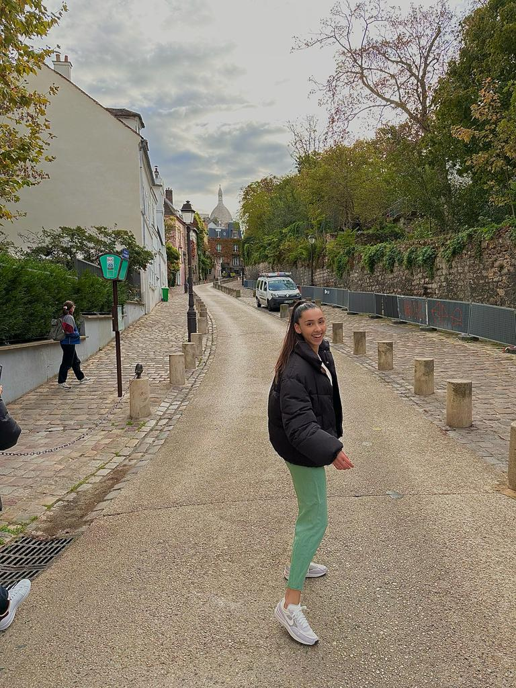

Quien soy?
Tengo 25 años, a mis 18 años arranque a estudiar Ingenieria Quimica, me di cuenta rápidamente que eso no era para mi, fue entonces cuando decidí estudiar contador público, la cual es mi actual profesión. Hoy en dia veo que el mundo se está inclinando a la rama de IT y sin dudas no quiero quedarme afuera es por eso que decidi arrancar a estudiar, porque esa es la base de todo no? Espero realmente que todo me sirva mucho y sobretodo poder encontrar esa posibilidad que todos tanto anhelamos.